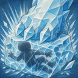

Pancada de Geada
Causa ao alvo atual dano físico igual a 240% do Ataque e o deixa Congelado por 1,5 s. Um inimigo Congelado não age nem ganha Mana. Aos inimigos em um cone que se estende 2 casas atrás do alvo, causa dano físico igual a 180% do Ataque e aplica Geada, que reduz a Velocidade de Ataque deles em 15% por 6 s.